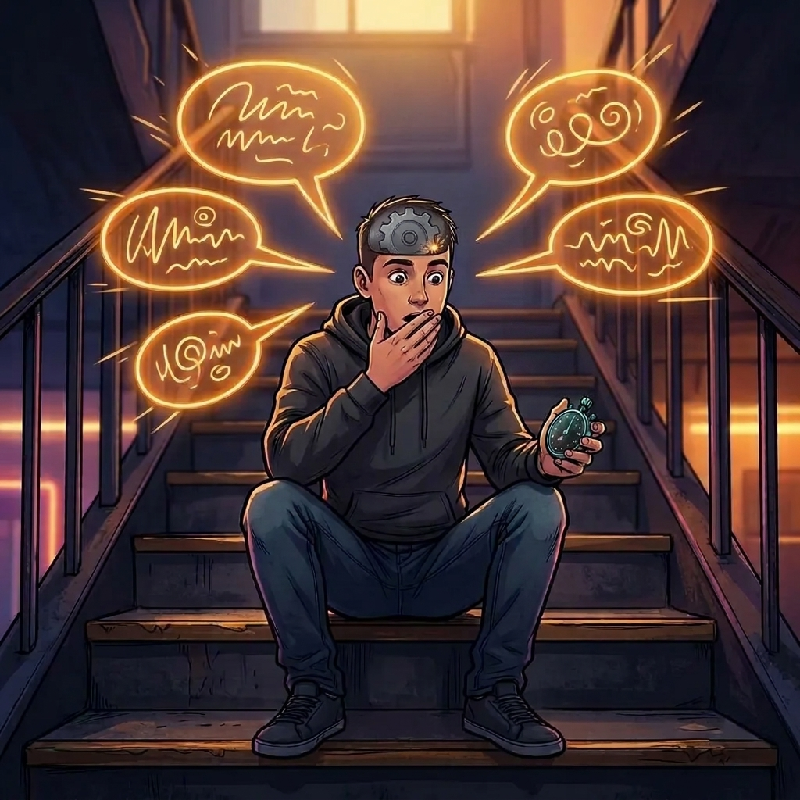

3 Sekunden, 5 Sätze

Gleich siehst du fünf Satzanfänge. Ergänze jeden in Gedanken. Nicht nachdenken, nicht schön formulieren. Nimm das Erste, was kommt. Auch wenn es dir komisch vorkommt.
Nimm das Erste, was kommt.
Auflösung
Und? Welcher Satz war am schnellsten fertig?
Schau ihn dir kurz an. Fühlt er sich an wie eine Meinung? Oder eher wie eine Tatsache, so nach dem Motto „ist halt so“?
Spannend ist nicht, was du geantwortet hast. Spannend ist, wie schnell die Antwort da war. Du musstest sie nicht erfinden. Sie lag schon bereit.
Solche fertigen Sätze über dich, andere und die Welt hat jeder Mensch. Manche tragen dich. Andere bremsen dich, ohne dass du es merkst. Genau um die geht es in diesem Kapitel.
Halte dir den schnellsten Satz kurz fest
Hak den Satzanfang an, der am schnellsten fertig war, und schreib ihn zu Ende.
Deine Notiz bleibt nur auf deinem Gerät.
Satzergänzung ist eine Methode aus der Psychologie (u. a. Rotter & Rafferty, 1950; Branden, 1994). Das hier ist kein Test und keine Diagnose. Es zeigt dir nur, was dir gerade als Erstes einfällt.